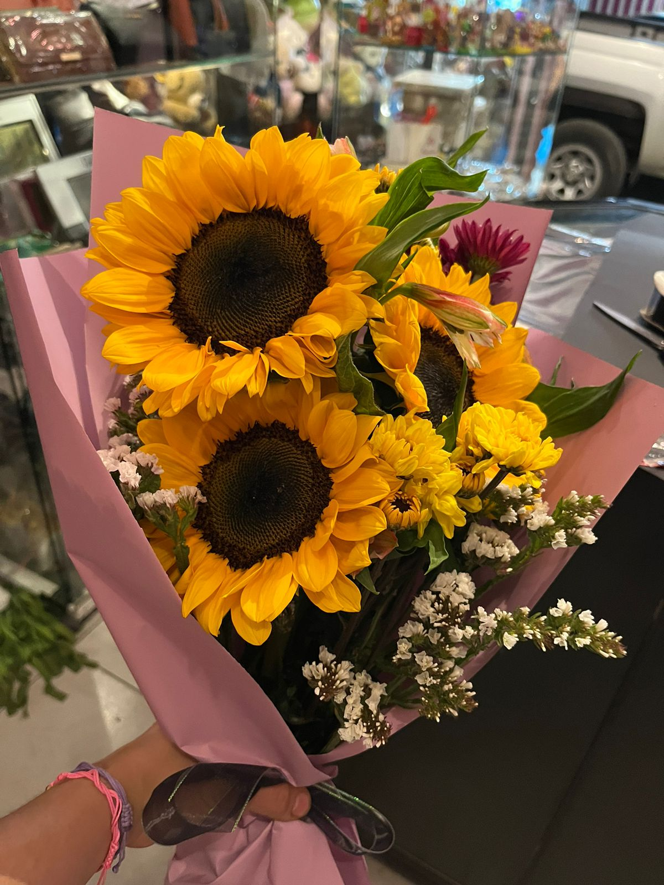

Poemas que me recuerdan a ti
-
Soneto XVII
No te amo como si fueras rosa de sal, topacio
o flecha de claveles que propagan el fuego:
te amo como se aman ciertas cosas oscuras,
secretamente, entre la sombra y el alma.
Pablo Neruda

-
Amor constante más allá de la muerte
Cerrar podrá mis ojos la postrera
sombra que me llevare el blanco día,
y podrá desatar esta alma mía
hora, a su afán ansioso lisonjera;
mas no, de esotra parte, en la ribera,
dejará la memoria, en donde ardía:
nadar sabe mi llama el agua fría,
y perder el respeto a ley severa.
Francisco de Quevedo

Mis poemas
-
Ojos bellos
Mis ojos han visto hermosas maravillas,
como el sol en su cenit o el mar en calma;
pero nada se compara a la belleza
que encuentro en tus ojos color café.
Son la puerta a tu alma, un camino al amor
que me hace sentir vivo con cada mirada.
Si alguna vez hubiera un lugar donde perderse,
sería en el brillo de tus ojos marrones.
Porque cuando me miras, todo el mundo desaparece,
y solo queda el amor entre nosotros dos.
Mis ojos se han cansado de ver la belleza
que abunda en este mundo, pero nunca me canso
de mirar en tus ojos el amor constante
que me inspiran a ser mejor cada día.
Así que prometo amarte con todo mi corazón,
y contemplar la belleza de tus ojos
hasta el fin de mis días.
yo
-
No sé qué decir
No sé qué decir cuando te veo,
las palabras se escapan de mi boca,
mis rodillas tiemblan y mi corazón late rápido,
como si quisiera escapar de mi pecho.
No sé qué decir cuando me miras,
los ojos más hermosos que jamás haya visto,
me pierdo en ellos y me olvido del mundo,
dejo que tu mirada me guíe a través del universo.
No sé qué decir cuando te toco,
tu piel suave y cálida debajo de mis dedos,
siento una corriente eléctrica que me recorre,
y me hace temblar de la cabeza a los pies.
No sé qué decir, pero sé lo que siento,
que mi corazón late por ti,
que mis pensamientos son tuyos,
y que mi amor por ti nunca morirá.
yo
-
Tu sonrisa
En la lluvia gris de una tarde de abril,
tu sonrisa es como un rayo de sol que irradia,
un destello que ilumina todo a su alrededor,
y la tristeza de mi alma, lentamente se desvanece.
Tus labios se curvan en una curva perfecta,
como si estuvieran tallados por los dioses mismos,
y tus ojos brillan como las estrellas en el cielo,
haciéndome creer que todo es posible.
Así que sonríe, mi dulce y amada,
porque con cada sonrisa tuya,
mi amor por ti crece aún más,
y mi corazón late con fuerza.
Que tu sonrisa sea mi guía en la oscuridad,
y mi fuente de felicidad y esperanza,
porque para mí, no hay nada más hermoso,
que el brillo de tu sonrisa en mi vida.
yo

-
21 de marzo
Dulce, desde que te conoci
no he dejado de pensar en ti
Eres como un soplo de primavera
Que ha llegado para alegrar mi existir.
En tu compañia siento la calidez
de los primeros rayos del sol
y aunque se que somos solo amigos
en mi corazon hay un gran amor.
Por eso hoy te traigo estas flores
para celebrar el inicio de la estacion
y agradecer por tu presencia
que ha llenado mi vida de emocion.
Eres una persona muy especial
que ha sabido ganarse mi admiracion
y aunque no somos una pareja formal
quiero que sepas que eres mi gran pasion.
Dulce, en este dia de primavera
te confieso mi amor con esta flor
y espero que en tu corazon florezca
el cariño que por ti guardo con fervor.
yo
